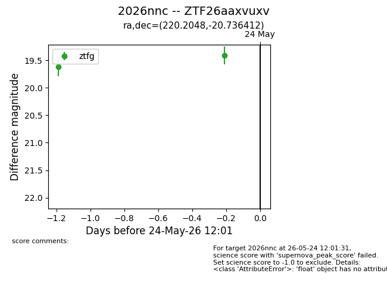
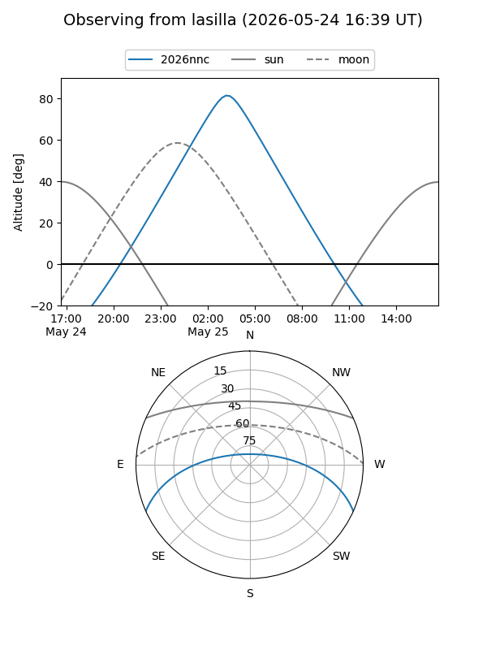
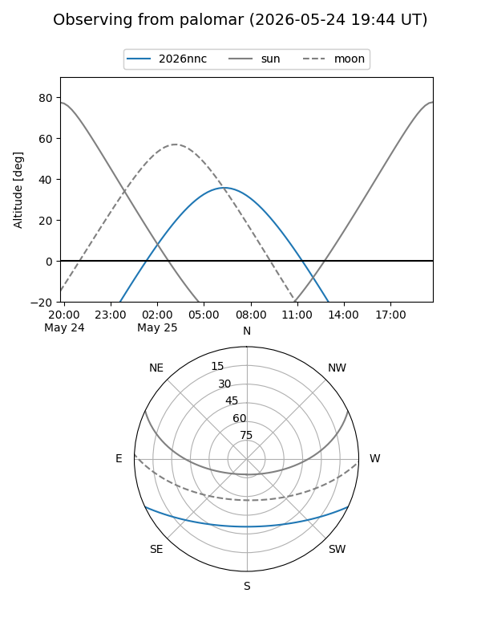
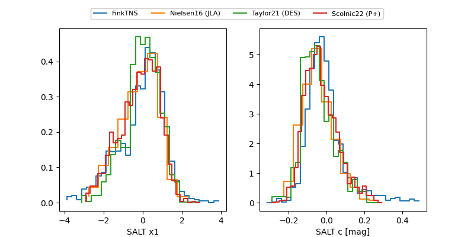

2026nnc
Target 2026nnc at 2026-05-24 12:02
Aliases and brokers:
lsst-FINK: link
lsst-Lasair: link
lsst-ALeRCE: link
ztf-FINK: link
ztf-Lasair: link
ztf-ALeRCE: link
TNS: link
YSE: link
alt names
ZTF26aaxvuxv (ztf,fink_ztf)
2026nnc (tns,yse)
Coordinates:
equatorial (ra, dec) = 220.2048,-20.73641
equatorial (HMS+DMS) = 14:40:49.16,-20:44:11.08
galactic (l, b) = (334.6934,+35.30114)
Flags:
TNS confirmed: nan
Photometry:
last ztfg=19.41
2 ztfg detections
Lightcurve

Visibility


Additional plots
